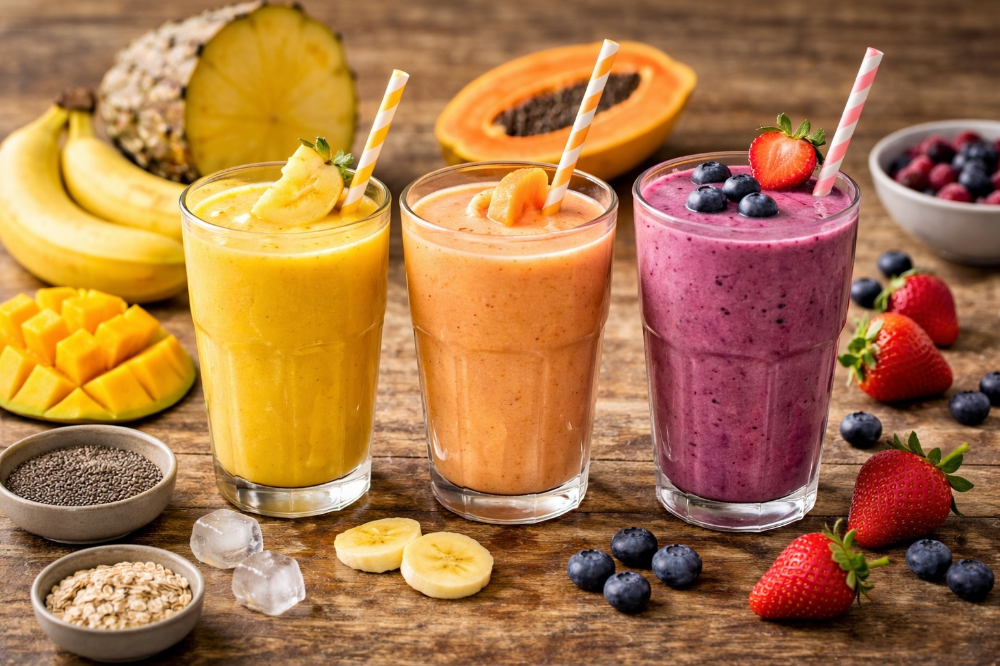

Whole Foods Recipes: Blended Asparagus & Broccoli Soup
Last updated: 2026

A simple blended vegetable soup made with asparagus, broccoli, potatoes, garlic, and olive oil or butter. Clean, practical, and ideal for using fresh or frozen vegetables.
Key takeaways
- Low waste — a good use for frozen asparagus, broccoli stems, or leftover vegetables.
- Naturally creamy — potatoes create body without needing cream.
- Simple flavor base — garlic, onion, and fat do most of the work.
- Freezer-friendly — easy to batch and reheat later.
Purpose
A practical blended soup that turns simple vegetables into a smooth, nourishing meal. Good for light lunches, recovery days, or building a freezer-friendly soup system.
Servings
- About 2 servings
Ingredients
- 5–6 asparagus spears (fresh or frozen)
- Small handful of broccoli (stems or florets)
- 1–2 small potatoes, chopped
- 1 clove garlic
- Small piece of onion or green onion
- 1 tablespoon butter or olive oil
- 2–3 cups water or stock
- Salt, to taste
Optional: squeeze of lemon, drizzle of olive oil at the end.
Method
- Build the base. In a pot over medium heat, warm the butter or olive oil. Add garlic and onion and cook for 2–3 minutes until fragrant.
- Add vegetables. Add asparagus, broccoli, and chopped potatoes. Stir for about 1 minute.
- Add liquid. Pour in water or stock until the vegetables are just covered.
- Simmer. Cook on medium-low heat for 15–20 minutes, until all vegetables are soft.
- Blend. Blend until smooth.
- Finish. Add salt to taste. Optional: finish with a small drizzle of olive oil or a squeeze of lemon.
Notes
- Potatoes matter: they create a naturally creamy texture without needing dairy.
- Frozen vegetables are fine: especially useful for asparagus that no longer roasts well after freezing.
- Do not overcook: 15–20 minutes is usually enough to keep the flavor fresh and avoid bitterness.
- Adjust texture easily: add more liquid if too thick, or simmer slightly longer if too thin.
Storage
- Store in the refrigerator for 2–3 days.
- Freeze in containers for future meals.
- Reheat gently and stir well before serving.
Why this works
This soup balances asparagus for flavor, broccoli for body, and potatoes for texture. It is a good example of how simple ingredients can produce a complete result when the structure is right.
Next steps
Continue with more Whole Food Cooking.
This article focuses on practical cooking with simple ingredients, not medical advice.